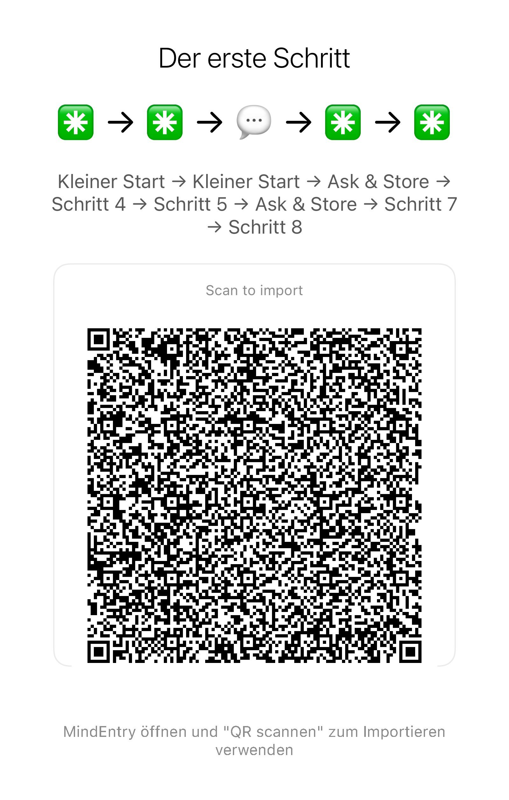

Published Mental Steps for different moments, states, and destinations.
When your mind loops, freezes, overloads, waits, wanders, or simply cannot begin, pick the closest situation and follow the steps.
Some Mental Steps use MINDBEBOP apps. Some use ordinary real-world actions. Some combine both.
You do not need to understand the whole MINDBEBOP system first. Start with the moment you are in.
Do not read everything.
Find the situation closest to what is happening now and try the Mental Steps that fit it.
MindEntry can hold a sequence for you so you do not have to remember what comes next.
Some Mental Steps are fixed. Others are Stateful Mental Steps that can adapt while you move.
Don't know where to start
Can't start
Grounding
Looping thoughts
Checking, craving, impulse
Overload, panic, shutdown
Emotional residue
Daily direction
The Situation: Your mind feels overloaded or stuck inside itself, and you want to bring attention back to what is physically around you.
The 5-4-3-2-1 grounding method is already a known sensory exercise. Running it through MindEntry means you do not have to remember the sequence.
Take these Mental Steps in MindEntry:
Import the sequence into MindEntry. One screen, one step, no sequence to remember.
Method 1: Scan to Import
Method 2: Copy & Paste Code into MindEntry
The Situation: You know what needs to be done, but you cannot begin. The task feels too large, too complicated, or too heavy.
Instead of asking you to solve the whole task, these Stateful Mental Steps reduce the distance of the next move.

The Situation: Your thoughts are looping, you feel overwhelmed, and you are not sure what to do with them.
The Situation: You are already simulating an argument with someone before the interaction has even happened.
The Situation: You want a snack, but you suspect the urge is more about stimulation than hunger.
The Situation: You keep checking your phone because a message or email has not been answered.
The Situation: An old mistake or embarrassing moment appears just when you are trying to sleep.
The Situation: The day is over and your mind is still evaluating everything you did or did not accomplish.
The Situation: You see someone else's life or success and suddenly feel behind.
The Situation: A meeting, presentation, or speech is approaching and your mind keeps rehearsing what could go wrong.
The Situation: A conflict has ended externally, but it is continuing internally.
The Situation: Your mind is trying to solve a future problem that cannot be solved right now.
The Situation: You have time off but cannot stop thinking about what you should be doing.
The Situation: A small irritating or sticky thought is beginning to gather momentum.
The Situation: You feel the urge to check messages, email, analytics, or notifications again even though you just checked.
The Situation: You keep reaching for scrolling, checking, or refreshing even though you want to stop for a while.
The Situation: You wake up and immediately drift into scattered thoughts or incoming information.
The Situation: By midday, your attention is scattered across unfinished things.
The Situation: The day is finished, but your mind keeps replaying, planning, and holding unfinished things.
The Situation: You know a stressful meeting, call, commute, or other event is coming and your mind tends to start early.
The Situation: Unstructured time starts turning into passive scrolling or vague restlessness.
The Situation: You know what you need to do, but the doorway into the task feels harder than the task itself.
The Steps Library does not need to be limited to sequences created by MINDBEBOP.
A published set of Mental Steps could use:
What matters is not which tools appear inside it.
What matters is whether the steps help the navigation continue.
Learn more about Mental Steps
Find your moment. Take the next step.
Was hat Sie hierher geführt?
Eine kurze Notiz genügt.
support@mindbebop.com
Copyright © 2026 MINDBEBOP — All rights reserved.